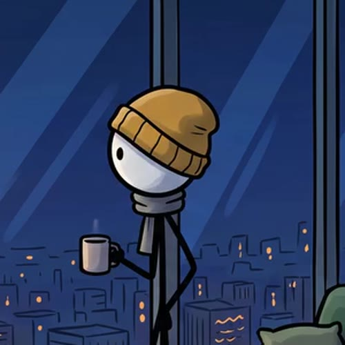

Copié el personaje del Instagram: cabeza blanca con sombra abajo, ojitos mirando de lado, sin boca, bufanda gris con la punta colgando y cuerpo de palitos con piernas largas. Lo único que cambia entre opciones es el gorro, y todos son gorros que usaría cualquier persona.

Es lo más normal del mundo y, aun así, es la silueta que más se separa del original: la visera se ve aunque el personaje sea una sombra. Los gorros de lana (con pompón, a rayas o corto) se ven igual de normales, pero corres el riesgo de que digan que copiaste al Beanie.
Segunda opción: jockey al revés, más juvenil. Tercera: gorro con pompón, si quieres quedarte cerca del original.